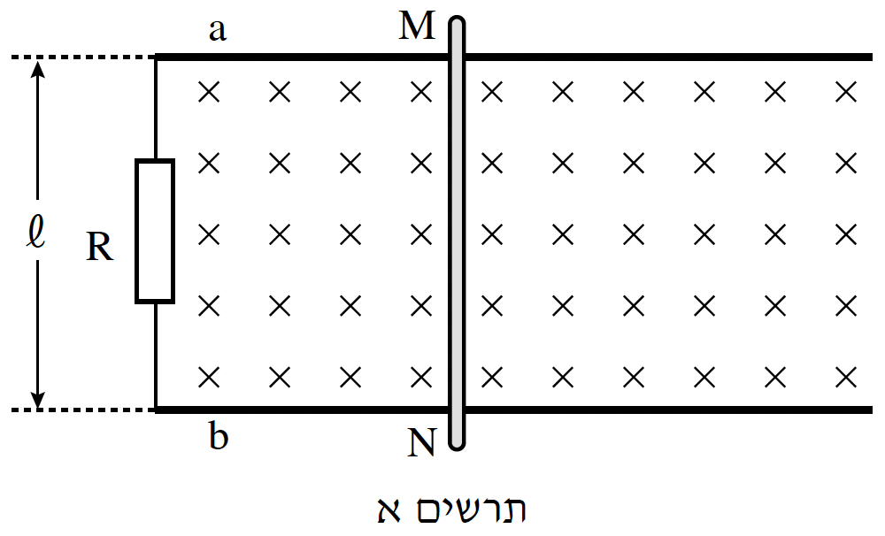
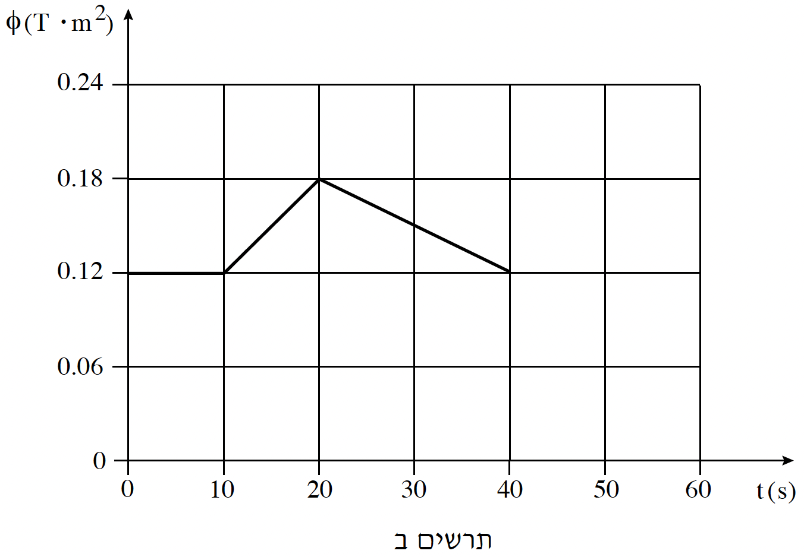

בתרשים א' מוצגת מערכת הכוללת שני פסי מתכת \(a\) ו-\(b\) אופקיים ומקבילים זה לזה, שהמרחק ביניהם הוא \(l = 0.6m\). הפסים מוליכים והם מחוברים באמצעות נגד שהתנגדותו \(R = 0.5\Omega\).
מוט מוליך \(MN\) מונח על שני הפסים וניצב להם. התנגדות הפסים והתנגדות המוט ניתנות להזנחה. המערכת נמצאת בתוך שדה מגנטי אחיד שגודלו \(B = 0.2T\) וכיוונו ניצב למישור המערכת, "לתוך הדף".

שינויים בשטף המגנטי יכולים להיגרם אך ורק בגלל תנועת המוט. גורם חיצוני יכול להניע את המוט ימינה או שמאלה, או להשאיר אותו במנוחה, כך שבכל זמן נתון המוט ניצב לפסים.
בתרשים ב' מוצג גרף של השטף המגנטי – העובר דרך המשטח התחום על ידי הפסים, הנגד והמוט – כפונקציה של הזמן, החל מזמן \(t = 0\) עד \(t = 40s\).

א.האם בפרק הזמן שבין \(t = 0\) לבין \(t = 10s\) המוט נע ימינה, שמאלה או נמצא במנוחה?
נמקו. (4 נקודות)
ב.האם בפרק הזמן שבין \(t = 10s\) לבין \(t = 20s\) המוט נע ימינה, שמאלה או נמצא במנוחה?
נמקו. (5 נקודות)
ג.חשבו את עוצמת הזרם המושרה במעגל בפרק הזמן שבין \(t = 10s\) לבין \(t = 20s\). (6 נקודות)
ד.מהו כיוון הזרם המושרה במעגל בפרק הזמן שבין \(t = 10s\) לבין \(t = 20s\), מ-\(M\) ל-\(N\)
או מ-\(N\) ל-\(M\)? הסבירו את תשובתכם באמצעות חוק לנץ. (7 נקודות)
ה.חשבו את גודל הכוח המגנטי הפועל על המוט \(MN\) בפרק הזמן שבין \(t = 20s\) לבין \(t = 40s\) וציינו את כיוונו. (6 נקודות)
ו.האם בפרק הזמן שבין \(t = 20s\) לבין \(t = 40s\) תנועת המוט היא שוות מהירות, שוות תאוצה או שונת תאוצה? נמקו. (5.33 נקודות)